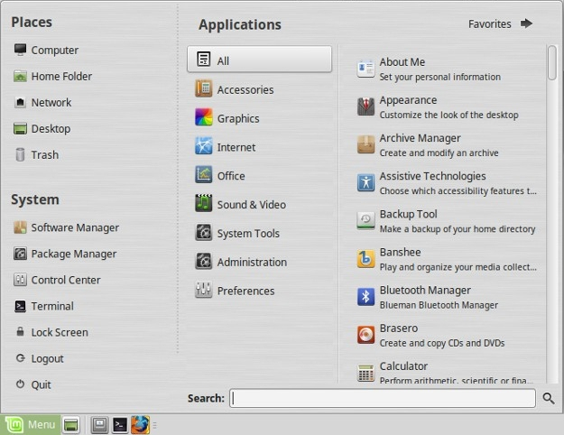

Linux Mint MATE's menu, you can access everything you need. With it you can search for installed programs, remove programs, add programs to favorites, and much more. It is very straightforward to use.
Open the menu by pressing the start key on your computer keyboard or by pressing the button marked "menu" on the bottom left-hand corner.